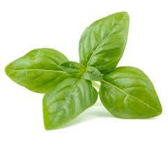
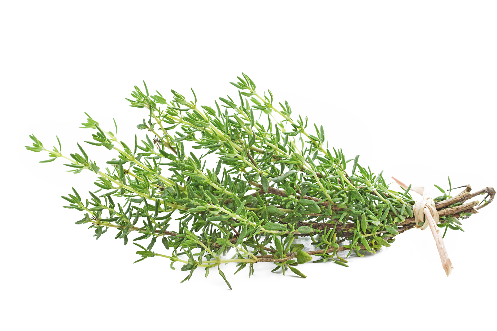
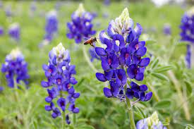

| Plant Name | Tray Location and Number | Plant Description | Picture |
|---|---|---|---|
| Basil | Row 1 and Tray #1 | Basil is an annual herbaceous plant in the mint family Lamiaceae. It has square stems with leaves that grow on opposite sides, and the leaves are rounded, slightly cupped, and curve to form at point at the tip. The leaves are generally light green, although some varieties have reddish or purplish leaves. |  |
| Thyme | Row 1 and Tray #2 | Thyme is a small perennial shrub that grows 4-12 inches in height with slender, wiry, and spreading branches. It has small green-grey evergreen leaves and violet colored flowers. Thyme prefers dry chalky soil and tolerates drought once it is established. It thrives in full sun, but also tolerates partial shade. |  |
| Bluebonnet | Row 2 and Tray #1 | Bluebonnets are typically herbaceous annuals and grow about 0.3 metre (1 foot) tall, though perennial species may be larger. They bear palmately compound leaves composed of about five silky-haired leaflets. |  |
| Tomatoes | Row 2 and Tray #2 | The tomato fruit is globular or ovoid. Botanically, the fruit exhibits all of the common characteristics of berries; a simple fleshy fruit that encloses its seed in the pulp. The outer skin is a thin and fleshy tissue that comprises the remainder of the fruit wall as well as the placenta. | |